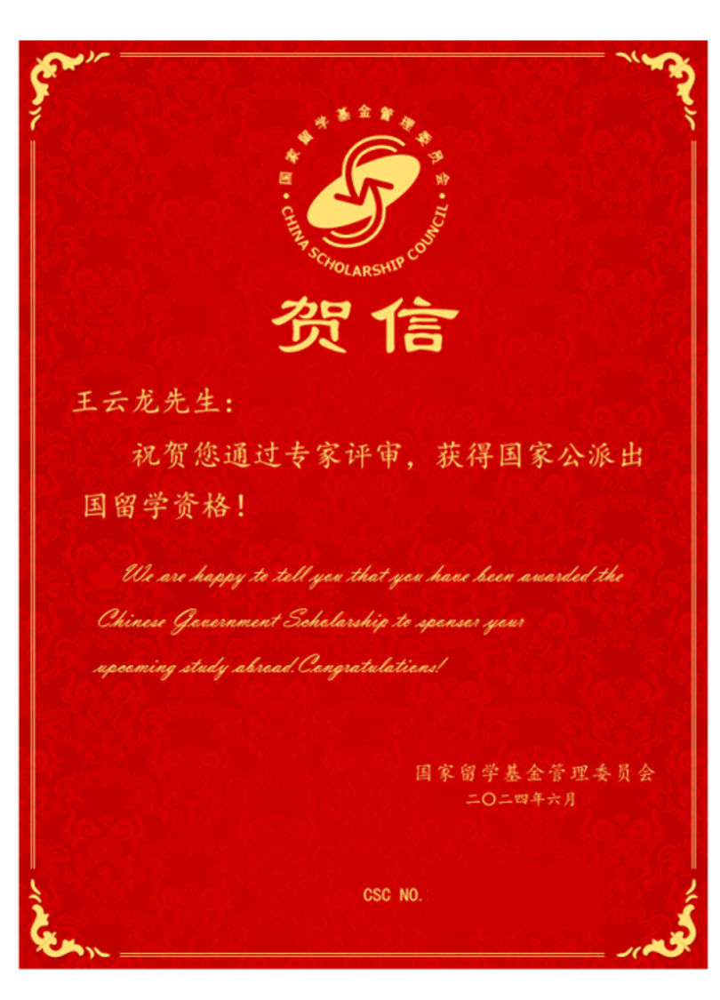

#Standard
标准类型：推荐性国家标准（GB-T）
发布日期：2022-10-14
实施日期：2023-05-01
起草单位：中国科学院自动化研究所、北京中科虹霸科技有限公司、天津中科虹星科技有限公司、北京邮电大学、北京眼神智能科技有限公司、天津中科智能识别有限公司、公安部第一研究所、上海芯灵科技有限公司
主要起草人：王云龙、孙哲南、李星光、张慧、李海青、何召锋、侯鸿川、马力、侯广琦、王微、杨春林、刘洋、张堃博、薛文芳、李文洁、徐伟
标准范围：本文件规定了公共安全虹膜识别应用中算法评测方法的测试库建库规则、测试环境、测试流程，描述了测试方法。本文件适用于公共安全虹膜识别应用中算法的评测。
标准类型：推荐性国家标准（GB-T）
发布日期：2022-10-14
实施日期：2023-05-01
起草单位：天津中科虹星科技有限公司、中国科学院自动化研究所、北京中科虹霸科技有限公司、公安部第一研究所、北京邮电大学、北京眼神智能科技有限公司、公安部第三研究所、 …
